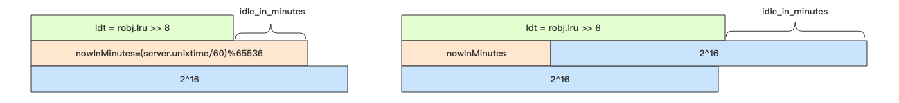

Redis 的过期策略和内存淘汰机制 #
在日常开发中，我们使用 Redis 存储 key 时通常会设置一个过期时间，但是 Redis 是怎么删除过期的 key，而且 Redis 是单线程的，
删除 key 过于频繁会不会造成阻塞。要搞清楚这些，就要了解 Redis 的过期策略和内存淘汰机制。
Redis 采用的是定期删除加懒惰删除策略。懒惰删除就是在客户端访问这个 key 的时候，redis 对 key 的过期时间进行检查，如果过期了 就立即删除。定时删除是集中处理，惰性删除是零散处理。
定期删除策略 #
Redis 会将每个设置了过期时间的 key 放入到一个独立的字典中，默认每 100ms 进行一次过期扫描：
- 随机抽取
20个key - 删除这
20个key中过期的key - 如果过期的
key比例超过1/4，就重复步骤1，继续删除。
之所以不扫描所有的 key，是因为 Redis 是单线程，全部扫描会导致线程卡死。
而且为了防止每次扫描过期的 key 比例都超过 1/4，导致不停循环卡死线程，Redis 为每次扫描添加了上限时间，默认是 25ms。
如果一个大型的 Redis 实例中所有的 key 在同一时间过期了，会出现怎样的结果？ #
大量的 key 在同一时间过期，那么 Redis 会持续扫描过期字典 (循环多次)，直到过期字典中过期的 key 变得稀疏，才会停止 (循环次数明显下降)。 这会导致线上读写请求出现明显的卡顿现象。导致这种卡顿的另外一种原因是内存管理器需要频繁回收内存页，这也会产生一定的 CPU 消耗。
而且，如果客户端将请求超时时间设置的比较短，比如 10ms，但是请求以为过期扫描导致至少等待 25ms 后才会进行处理，那么就会出现大量的请求因为
超时而关闭，业务端就会出现很多异常。这时你还无法从 Redis 的 slowlog 中看到慢查询记录，因为慢查询指的是逻辑处理过程慢，不包含等待时间。
所以要避免大批量的 key 同时过期，可以给过期时间设置一个随机范围，分散过期处理的压力。
从库的过期策略 #
从库不会进行过期扫描，从库对过期的处理是被动的。主库在 key 到期时，会在 AOF 文件里增加一条 del 指令，同步到所有的从库，从库通过执行
这条 del 指令来删除过期的 key。
因为指令同步是异步进行的，所以主库过期的 key 的 del 指令没有及时同步到从库的话，会出现主从数据的不一致。
内存淘汰机制 #
当 Redis 内存超出物理内存限制时，内存的数据会开始和磁盘产生频繁的交换 (swap)。交换会让 Redis 的性能急剧下降，对于 Redis 来说，这样 龟速的存取效率基本上等于不可用。
Redis 为了限制最大使用内存，提供了配置参数 maxmemory，可以在 redis.conf 中配置。当内存超出 maxmemory，Redis 提供了几种
策略（maxmemory-policy）让用户选择：
noeviction：当内存超出maxmemory，写入请求会报错，但是删除和读请求可以继续。（这个可是默认的策略）。allkeys-lru：当内存超出maxmemory，在所有的key中，移除最少使用的key。allkeys-random：当内存超出maxmemory，在所有的key中，随机移除某个key。（应该没人用吧）volatile-lru：当内存超出maxmemory，在设置了过期时间key的字典中，移除最少使用的key。volatile-random：当内存超出maxmemory，在设置了过期时间key的字典中，随机移除某个key。volatile-ttl：当内存超出maxmemory，在设置了过期时间key的字典中，优先移除ttl小的。
volatile-xxx 策略只会针对带过期时间的 key 进行淘汰，allkeys-xxx 策略会对所有的 key 进行淘汰。如果只是拿 Redis 做缓存，那应该使 用 allkeys-xxx，客户端写缓存时不必携带过期时间。如果还想同时使用 Redis 的持久化功能，那就使用 volatile-xxx 策略，这样可以保留没 有设置过期时间的 key，它们是永久的 key 不会被 LRU 算法淘汰。
近似 LRU 算法 #
Redis 使用的并不是完全 LRU 算法。不使用 LRU 算法，是为了节省内存，Redis 采用的是随机 LRU 算法，Redis 为每一个 key 增加了
一个 24 bit 的字段，用来记录这个 key 最后一次被访问的时间戳。注意 Redis 的 LRU 淘汰策略是懒惰处理，也就是不会主动执行淘汰
策略，当 Redis 执行写操作时，发现内存超出 maxmemory，就会执行 LRU 淘汰算法。这个算法就是随机采样出 5 (默认值)个 key，然后移
除最旧的 key，如果移除后内存还是超出 maxmemory，那就继续随机采样淘汰，直到内存低于 maxmemory 为止。
如何采样就是看 maxmemory-policy 的配置，如果是 allkeys 就是从所有的 key 字典中随机，如果是 volatile 就从带过期时间的 key 字
典中随机。每次采样多少个 key 看的是 maxmemory_samples 的配置，默认为 5。
LFU #
Redis 4.0 里引入了一个新的淘汰策略 —— LFU（Least Frequently Used） 模式，作者认为它比 LRU 更加优秀。
LFU 表示按最近的访问频率进行淘汰，它比 LRU 更加精准地表示了一个 key 被访问的热度。
如果一个 key 长时间不被访问，只是刚刚偶然被用户访问了一下，那么在使用 LRU 算法下它是不容易被淘汰的，因为 LRU 算法认为当前这个 key 是 很热的。而 LFU 是需要追踪最近一段时间的访问频率，如果某个 key 只是偶然被访问一次是不足以变得很热的，它需要在近期一段时间内被访问很多 次才有机会被认为很热。
Redis 对象的热度 #
Redis 的所有对象结构头中都有一个 24 bit 的字段，这个字段用来记录对象的热度。
// redis 的对象头
typedef struct redisObject {
unsigned type:4; // 对象类型如 zset/set/hash 等等
unsigned encoding:4; // 对象编码如 ziplist/intset/skiplist 等等
unsigned lru:24; // 对象的「热度」
int refcount; // 引用计数
void *ptr; // 对象的 body
} robj;
LRU 模式 #
在 LRU 模式下，lru 字段存储的是 Redis 时钟 server.lruclock，Redis 时钟是一个 24 bit 的整数，默认是 Unix 时间戳对 2^24 取
模的结果，大约 97 天清零一次。当某个 key 被访问一次，它的对象头的 lru 字段值就会被更新为 server.lruclock。
LFU 模式 #
在 LFU 模式下，lru 字段 24 个 bit 用来存储两个值，分别是 ldt(last decrement time) 和 logc(logistic counter)。

logc 是 8 个 bit，用来存储访问频次，因为 8 个 bit 能表示的最大整数值为 255，存储频次肯定远远不够，所以这 8 个 bit 存储的
是频次的对数值，并且这个值还会随时间衰减。如果它的值比较小，那么就很容易被回收。为了确保新创建的对象不被回收，新对象的这 8 个 bit 会
初始化为一个大于零的值，默认是 LFU_INIT_VAL=5。
ldt 是 16 个位，用来存储上一次 logc 的更新时间，因为只有 16 位，所以精度不可能很高。它取的是分钟时间戳对 2^16 进行取模，大约每
隔 45 天就会折返。同 LRU 模式一样，我们也可以使用这个逻辑计算出对象的空闲时间，只不过精度是分钟级别的。图中的 server.unixtime 是
当前 redis 记录的系统时间戳，和 server.lruclock 一样，它也是每毫秒更新一次。
启用 LFU #
Redis 4.0 给淘汰策略配置参数 maxmemory-policy 增加了 2 个选项，
volatile-lfu：对带过期时间的 key 执行 lfu 淘汰算法allkeys-lfu：对所有的 key 执行 lfu 淘汰算法
使用 object freq 指令获取对象的 lfu 计数值：
> config set maxmemory-policy allkeys-lfu
OK
> set codehole yeahyeahyeah
OK
// 获取计数值，初始化为 LFU_INIT_VAL=5
> object freq codehole
(integer) 5
// 访问一次
> get codehole
"yeahyeahyeah"
// 计数值增加了
> object freq codehole
(integer) 6
为什么 Redis 要缓存系统时间戳？ #
因为每一次获取系统时间戳都是一次系统调用。系统调用相对来说是比较费时间的，作为单线程的 Redis 表示承受不起，所以它需要对时间进行缓存，获 取时间都直接从缓存中直接拿。
内存回收机制 #
Redis 并不总是可以将空闲内存立即归还给操作系统。
如果当前 Redis 内存有 10G，当你删除了 1GB 的 key 后，再去观察内存，你会发现内存变化不会太大。原因是操作系统回收内存是以页为单位， 如果这个页上只要有一个 key 还在使用，那么它就不能被回收。Redis 虽然删除了 1GB 的 key，但是这些 key 分散到了很多页面中，每个页面 都还有其它 key 存在，这就导致了内存不会立即被回收。
不过，如果你执行 flushdb，然后再观察内存会发现内存确实被回收了。原因是所有的 key 都干掉了，大部分之前使用的页面都完全干净了，会立 即被操作系统回收。
Redis 虽然无法保证立即回收已经删除的 key 的内存，但是它会重用那些尚未回收的空闲内存。
懒惰删除 #
Redis 为什么要懒惰删除(lazy free)？ #
删除指令 del 会直接释放对象的内存，大部分情况下，这个指令非常快，没有明显延迟。不过如果删除的 key 是一个非常大的对象，比如一个包
含了千万元素的 hash，又或者在使用 FLUSHDB 和 FLUSHALL 删除包含大量键的数据库时，那么删除操作就会导致线程卡顿。
redis 4.0 引入了 lazyfree 的机制，它可以将删除键或数据库的操作放在后台线程里执行， 从而尽可能地避免服务器阻塞。
unlink #
unlink 指令，它能对删除操作进行懒处理，丢给后台线程来异步回收内存。
> unlink key
OK
flush #
flushdb 和 flushall 指令，用来清空数据库，这也是极其缓慢的操作。Redis 4.0 同样给这两个指令也带来了异步化，在指令后面增
加 async 参数就可以扔给后台线程慢慢处理。
> flushall async
OK
异步队列 #
主线程将对象的引用从有效数据中删除后，会将这个 key 的内存回收操作包装成一个任务，塞进异步任务队列，后台线程会从这个异步队列中取任务。任 务队列被主线程和异步线程同时操作，所以必须是一个线程安全的队列。
不是所有的 unlink 操作都会延后处理，如果对应 key 所占用的内存很小，延后处理就没有必要了，这时候 Redis 会将对应的 key 内存立即回收，
跟 del 指令一样。
AOF Sync #
Redis 需要每秒一次(可配置)同步 AOF 日志到磁盘，确保消息尽量不丢失，需要调用 sync 函数，这个操作会比较耗时，会导致主线程的效率下降， 所以 Redis 也将这个操作移到异步线程来完成。执行 AOF Sync 操作的线程是一个独立的异步线程，它也有一个属于自己的任务队列，队列里只用 来存放 AOF Sync 任务。
更多异步删除点 #
Redis 回收内存除了 del 指令和 flush 之外，还会存在 key 的过期、LRU 淘汰、rename 指令以及从库全量同步时接受完 rdb 文件后会
立即进行的 flush 操作。
Redis4.0 为这些删除点也带来了异步删除机制，打开这些点需要额外的配置选项。
slave-lazy-flush从库接受完 rdb 文件后的flush操作lazyfree-lazy-eviction内存达到maxmemory时进行淘汰lazyfree-lazy-expirekey 过期删除lazyfree-lazy-server-delrename指令删除destKey